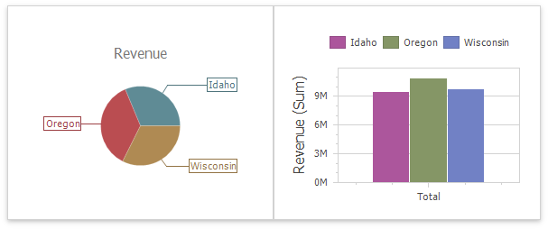

Coloring
The Dashboard Designer allows you to paint dashboard item elements such as chart series points or pie segments.

Supported Dashboard Items
You can paint the following dashboard items:
- Chart
- Scatter Chart
- Pie
- Pie Map
- Range Filter
- Treemap
Color Scheme Overview
The dashboard supports two ways to color dashboard item elements:
A Global Color Scheme uses consistent colors for identical values across the dashboard. The image below shows a dashboard that contains Pie and Chart dashboard items. Pie segments and chart series points that correspond to Wisconsin, Oregon and Idaho dimension values use identical colors from the default palette.

For a global color scheme, the dashboard reserves automatically generated colors for specific values regardless of the filter state.
A Local Color Scheme uses an independent set of colors for each dashboard item. The image below shows Pie segments that use colors from a local color scheme. These colors do not affect the Chart items that use a global scheme.

For a Local color scheme, the dashboard reassigns palette colors when the filter state is changed.
Tip
Local colorization paints dashboard item elements more quickly because the control does not request all possible colors and requests only colors used in the current item.
Color Measures and Dimensions
You can use predefined color modes to paint individual dimensions or all measures in a dashboard item.
The following color settings are available:
| Color Mode Option | Description |
|---|---|
| Default | Enables or disables coloring depending on the dashboard item's type. For example, for TreeMap arguments and Chart series, Default means Hue. For Chart arguments, Default means None. |
| Hue | Elements use different colors. |
| None | Elements use the same color. |
Documentation
Refer to the following help topics for more information on how to configure color variation in the WinForms Designer: